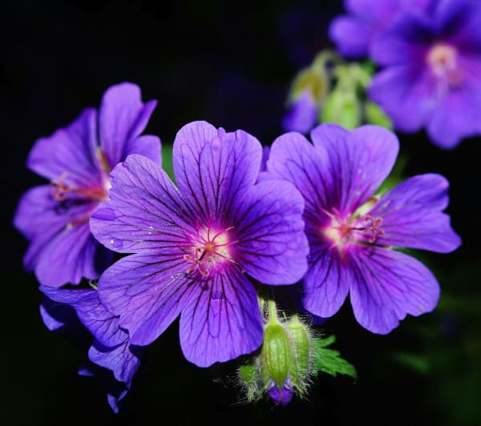

Flores
Estruturas reprodutivas das plantas com flores, compostas por pétalas coloridas, estames e pistilos.Muitas culturas ao redor do mundo têm uma longa tradição de utilizar flores em suas cozinhas. Por exemplo, na culinária asiática, flores como a flor de abóbora e a lavanda são usadas em diversas receitas.
Flores comestíveis apresentam uma gama surpreendente de sabores, desde o sutil até o picante. Algumas têm perfis de sabor que incluem notas cítricas, mentoladas e até mesmo apimentadas.
Flores comestíveis como a capuchinha destacam-se por sua rapidez, com flores emergindo em apenas algumas semanas após a semeadura. Seu sabor picante e cores vivas tornam-na uma escolha popular em saladas e pratos decorativos. Já a calêndula, com suas pétalas douradas, desabrocha em um prazo um pouco mais extenso, geralmente em torno de 8 a 10 semanas. Essa flor versátil é apreciada em pratos doces e salgados, além de ser usada em infusões e tinturas.
Em relação às calorias, é importante notar que flores geralmente não são consumidas em grandes quantidades para fornecer um valor calórico significativo. No entanto, algumas flores comestíveis podem oferecer benefícios nutricionais sutis, além de adicionar um toque decorativo e de sabor aos pratos. As calêndulas, por exemplo, são flores comestíveis que têm um teor calórico muito baixo. Em média, 100 gramas de calêndulas fornecem cerca de 15 a 20 calorias.
“Quando a vida fica difícil, lembre-se de que mesmo as flores mais bonitas passam por lama para florescer.”
- Categoria: Flores
- Surgiu: 5.000 anos
- Cultivo: 35 - 75 dias
- Média calórica: 16 kcal
- Preço médio: R$ 9,50 Kg
Escolher um local ensolarado é fundamental para garantir o desenvolvimento saudável das suas flores. Prepare o solo com uma mistura nutritiva e bem drenada. Escolha variedades que se adaptem ao clima local, considerando a estação e as condições específicas. Ao plantar suas flores, siga as orientações de plantio, respeitando as profundidades recomendadas e os espaçamentos ideais entre cada planta. Mantenha o solo devidamente úmido, adequando a rega às necessidades específicas de cada espécie floral.